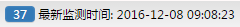
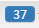
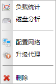

删除
删除点击是按钮忽略所有主机上的警告信息。

 。
。双击主页左侧导航树的主机节点可以打开主机监控面板。该页面用于管理和查看所有监控的主机。主机的监控无需在页面上手动添加，只需在主机上配置并启动数据库代理，就可以自动添加到该系统中。页面每隔一定时间会自动刷新主机监控信息。如下图所示:
功能按钮列表
| 按钮 | 说明 |
|---|---|
| 刷新 | 刷新主机列表。 |
| 删除 |
选中一个或多个要删除的主机点击按钮可以删除选中的主机。由于主机由系统自动扫描添加的，所以只有连接失败的主机才能删除成功。 |
| 更多>> | 点击按钮可以使用更多功能。弹出菜单如下图所示: |
| 配置网络 | 对于多网卡的主机需要用户配置网络环境。点击按钮，弹出配置网络对话框。 |
| 升级代理 | 升级主机上的数据库代理。点击按钮，弹出升级代理对话框。 |
| 忽略全部警告 | 忽略所有主机上的全部警告信息。点击按钮，弹出如下对话框： 点击是按钮忽略所有主机上的警告信息。 |
|
|
对主机列表进行主机地址的过滤。搜索输入框中输入内容，敲下回车或者点击。 |
|  | 显示最近一次获取主机信息的时间，通过点击按钮可以关闭页面的自动刷新。 |
主机监控信息列表
表中为当前收集到的各主机最新的监控信息。
| 字段 | 说明 |
|---|---|
| 主机 | 显示主机地址和主机的状态。 鼠标停留在主机列，可以显示主机的其他一些信息，如下图所示: 当主机名前出现图标时，表示主机可能存在以下异常情况： 1.主机未进行网络配置； 2.主机上的数据库代理版本过低； |
| 连接 | 连接是否正常， 表示连接正常， 表示连接失败； 表示连接失败； |
| CPU | cpu使用率。 |
| CPU等待 | cpu等待时间占比。 |
| 内存 | 内存使用率。 |
| 交换区 | 交换区使用率。 |
| 磁盘读 | 磁盘读取速率。 |
| 磁盘写 | 磁盘写入速率。 |
| 网络读 | 网络接收速率。 |
| 网络写 | 网络发送速率。 |
| 警告 | 警告通知数量。点击打开告警历史面板。 |
| 操作 | 点击  详细介绍请参见主机操作菜单列表。 |
| 菜单 | 说明 |
|---|---|
| 负载分析 | 主机负载详细信息。点击打开负载分析面板。 |
| 磁盘分析 | 主机磁盘使用情况详细信息。点击打开磁盘分析面板。 |
| 配置网络 | 给主机配置网络环境，用于多网卡主机。点击打开配置网络对话框。 |
| 升级代理 | 升级主机上的数据库代理。点击打开升级代理对话框。 |
| 删除 |
删除主机。 |